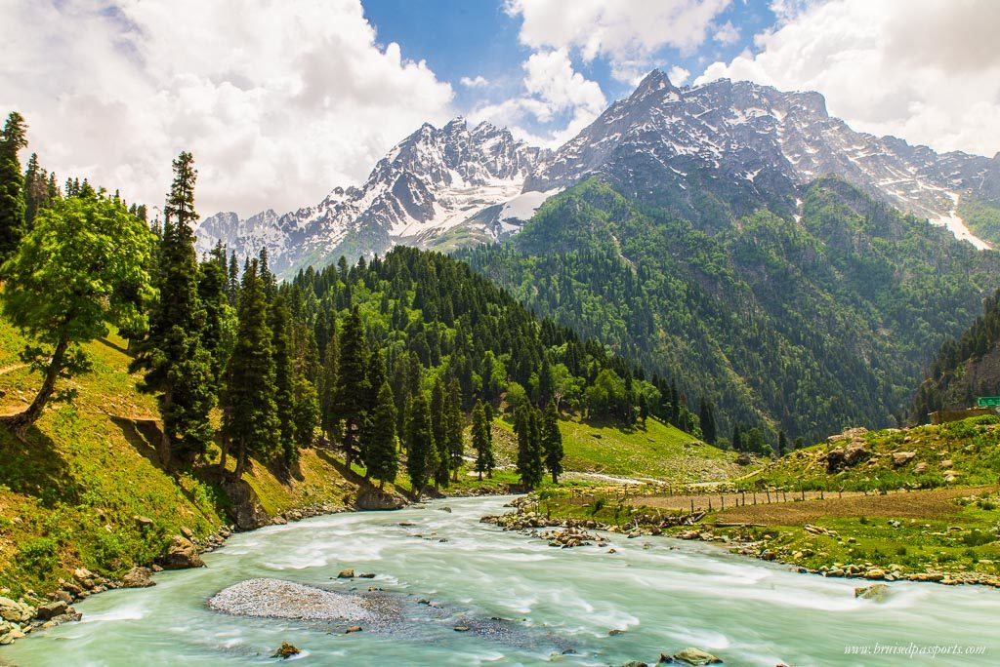

Top Destinations to Visit
Destination 1: Paris,France
Paris
Paris stands out for its iconic landmarks, rich culture, and romantic atmosphere, making it a global symbol of art, fashion, and history.
Learn more about Paris
Destination 2: Udaipur,Rajasthan
Udaipur
Udaipur is famous for its lakes, beautiful palaces, mountains, rooms and tiger gardens.
Learn more about Udaipur
Destination 3: Ladhak, Jammu and Kashmir

Ladakh
Ladakh is a high-altitude desert region that is home to some of the most stunning landscapes in the world.
Learn more about Ladakh
Top 3 Activities in paris
Visit the Eiffel Tower
Explore the Louvre Museum
Cruise on the Seine River
Food to try in Paris
Croissants
Escargots
French cheeses
Top 3 Activities in Udaipur
Explore City Palace
Boat Ride on Lake Pichola
Visit Jag Mandir
Food to try in Udaipur
Dal Baati Churma
Mirchi Bada
Kachori
Top 3 Activities in Ladakh
Visit Pangong Lake
Explore Nubra Valley
Drive on Khardung La Pass
Food to try in Ladakh
Sku and Thukpa
Pava
khambir
Destination Name
Continent
Estimated Travel Budget (USD)
Best Time to Visit
Paris
Europe
$2000 - $3000 (High season: Summer)
April to June
Udaipur
Asia
$500 - $1000
October to March
Ladakh
Asia
$1000 - $1500